Product Malware Scan and Removal
Please follow the steps below to remove malware on an instrument.
- Follow USB Drive Malware Scan and Removal to create a clean USB drive. This USB drive will be used to install the applicable malware tool below, and perform the scan and removal on the affected instrument.
-
On the instrument console, run WINVER from the command prompt to find the operating system version. Take a screen shot to attach to the service record.
Note: Make sure to take notice of if it is a 32-bit or 64-bit operating system as you will need to download the same for the tools below.Follow the instructions based on the instrument operating system below:
Operating System
Tool
Instructions
Windows 8, Windows 10, Windows Server 2008 R2, 2012, 2016, 2019, 2022 Microsoft Safety Scanner
Microsoft Security Scanner Procedure Windows 7, Windows Vista, Windows Server 2003 McAfee Stinger 32-bit Stinger Procedure Windows 2000, Windows XP SP2, Windows XP SP3 ClamWIN ClamWin Procedure
Microsoft Security Scanner Procedure
-
Create USB:
- For 64bit OS, this is the same tool used in USB Drive Malware Scanning, USB Drive Malware Scan and Removal. Install to your clean USB drive.
- For 32bit OS follow the instructions in USB Drive Malware Scanning, USB Drive Malware Scan and Removal but install the 32bit version to your clean USB drive instead of the 64bit version.
-
Insert the USB drive that you are using into the product. Note the drive letter that is assigned to your USB drive by opening This PC. This displays the drive letter assigned to your USB drive. In this example, the drive letter assigned is drive letter D.
Note: Malware removal must be done when the product is idle. Do not execute while running samples.
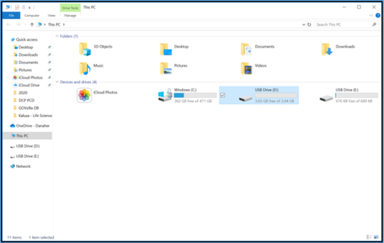
-
Follow the applicable section below depending on the tool being used/operating system identified above.
Note: If instrument has application control installed see instructions for your specific product on how to run with application control.
Microsoft Safety Scanner (See Step 1)
- Launch the msert.exe application from the USB drive on the system. The End user license agreement dialog box appears.
-
Select
Accept all terms of the preceding license agreement and then click
Next.
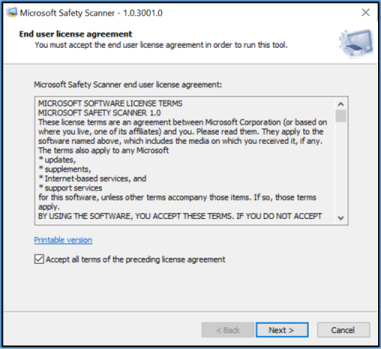
The Welcome to the Microsoft Safety Scanner window displays.
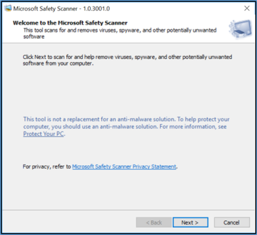
- Click Next.
-
Select
Quick Scan.
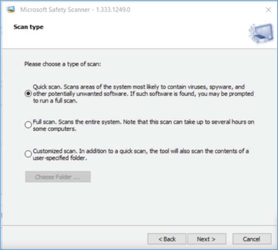
-
Click
Next to start the scan.
Wait for the scan to complete. A progress bar and timer displays. The tool indicates whether viruses are found.
-
If no viruses are found, take a screen shot for evidence to give to the customer. The scan is complete.
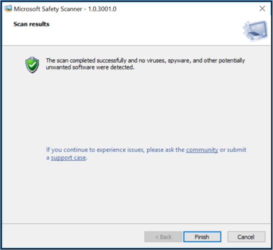
-
If viruses are found, click
View detailed results of the scan.
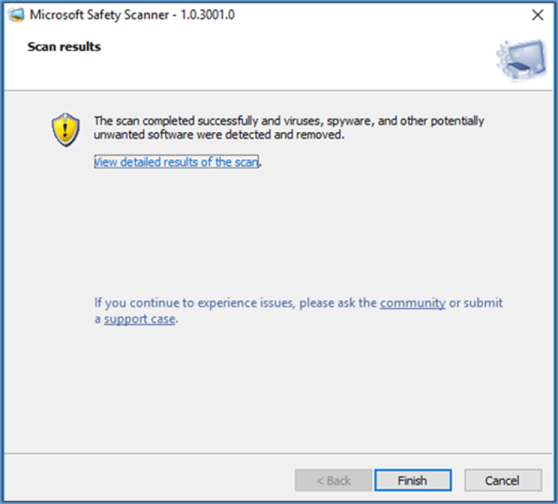
-
Click the entry of the viruses found and take a screenshot of this screen, as well as the details on each virus.
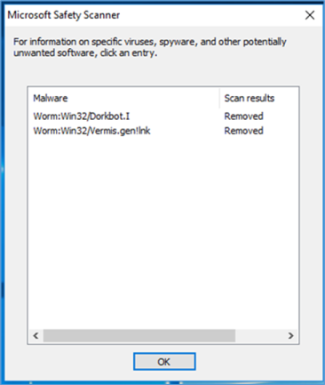
Note: If you see the following malware, it can be ignored. It is a false positive and its removal has no effect on the system.
-
Click
OK. Double-click the
This PC icon on the desktop to open it.
-
Navigate to the following file directory
C:\Windows\debug to locate the MSERT log file.
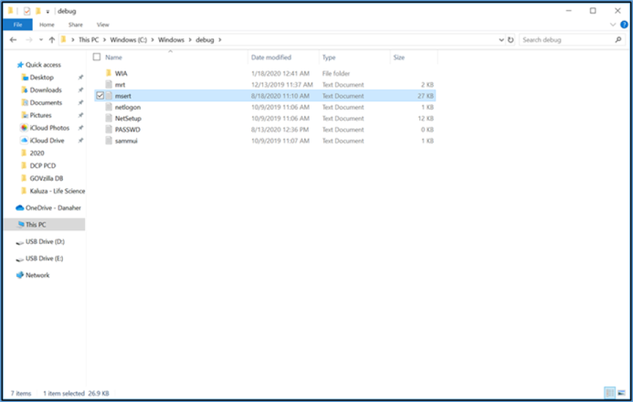
- Save the files to add them to the report.
Stinger Procedure
-
Create USB:
- Go to https://www.trellix.com/downloads/free-tools/stinger/.
- Click on Download Stinger or Download Stinger for x64 Systems, depending on the type of OS from above.
- Scroll through the license agreement and click Download Now.
- Find the Stinger.zip file (typically the Downloads folder).
-
Right click the file and chose
Extract All.
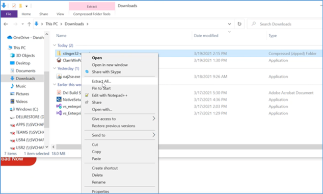
- Browse to find your USB drive. Make sure it is listed in the destination folder.
- Click Extract. The USB is now ready to use.
- Run the stinger.exe application from the USB drive on the system.
-
Select
I Accept at the User License Agreement window.
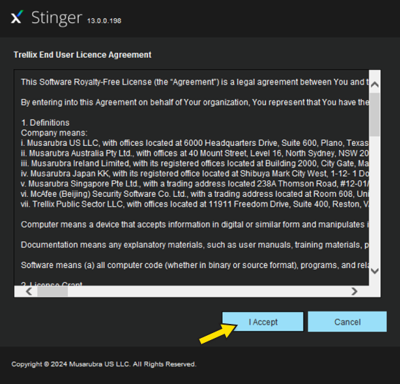
-
From the Scan window, select
Customize my scan.
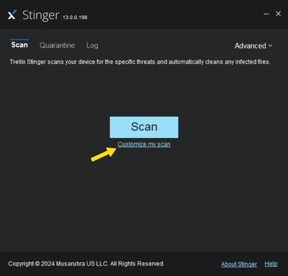
-
Select all drives except for portable devices and click
Scan. The Stinger window will display the scan progress, when complete, a status will be listed at the top of the window indicating if threats were found.
Note: The duration of the scan will depend on the size of the drive being scanned.
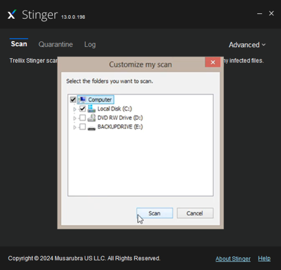
- Select Done. The report will be saved directly to the USB with the name Stinger*****.html.
ClamWin Procedure
-
Create USB:
- Go to https://portableapps.com/apps/security/clamwin_portable
-
Click
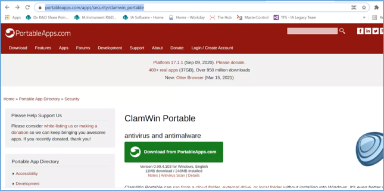
- Find the ClamWin file (typically the Downloads folder).
-
Double click on the
ClamWin file. The ClamWin Portable dialog is displayed.
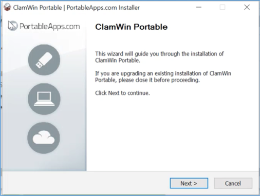
-
Click
Next. The ClamWin Portable Installation dialog is displayed.
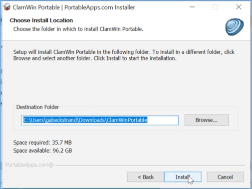
- Insert a clean USB drive into your laptop.
-
Change the folder to point to your USB Drive.
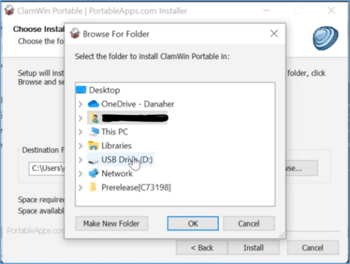
- Make sure the USB drive is listed in the Destination Folder and click Install.
- Find the ClamWinPortable.exe on your USB drive.
-
Double click
ClamWinPortable.exe. The ClamWin Free Antivirus dialog is displayed.
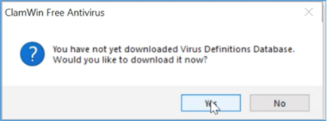
-
Click
Yes. The ClamWin Free Antivirus Downloading Update window is displayed.
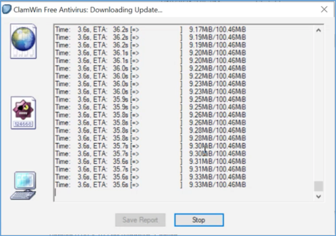
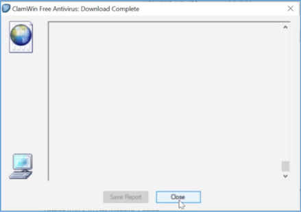
-
Click
Close. The scan window is displayed.
-
Navigate to
Tools > Preferences.
Note: This and the following steps are required to whitelist MUI files. An MUI file is a resource file used by the Multilingual User Interface component of Windows 2000 and later. ClamWin recognizes these files as false positives and will remove them, which may affect system functionality.
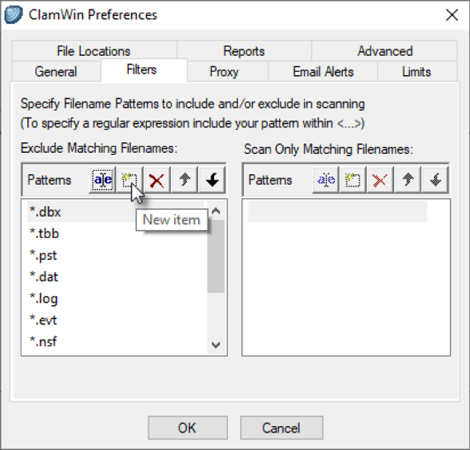
-
Select
Filters > New Item (under “Exclude Matching Filenames”).
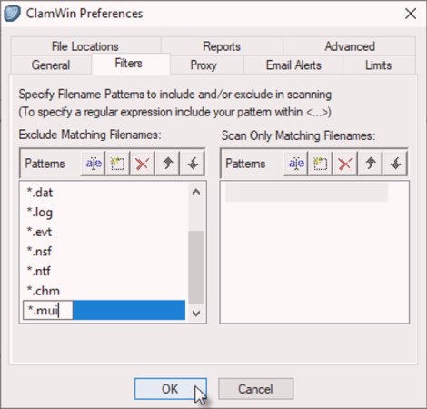
-
Enter *.mui and select
OK. The scan window is displayed.
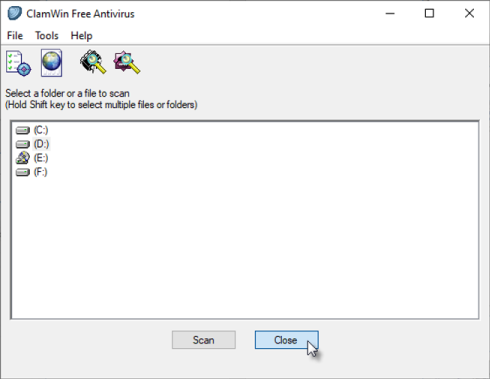
- Select Close. A scan is not required at this point. The USB is now ready to use.
- Select the ClamWinPortable.exe application from the USB drive on the system.
-
If prompted to update the database, select
No.
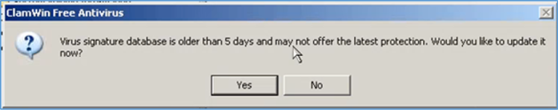
Note: The reason for clicking No is that you do not have internet access on the instrument to be able to update the signature files. If you encounter this message, repeat the steps for creating the USB drive with ClamWin tool to ensure the latest signature files are present. -
In the Tools menu click
Preferences.
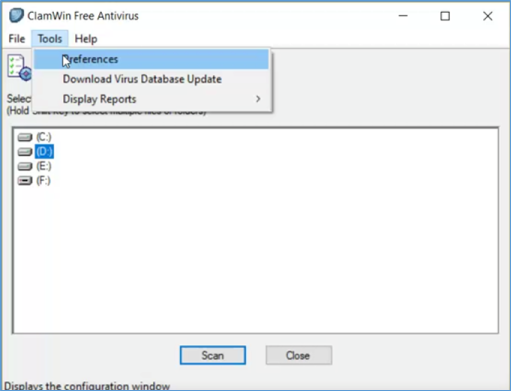
-
In the Infected Files section make sure the
Remove radio button is selected and click
Ok.
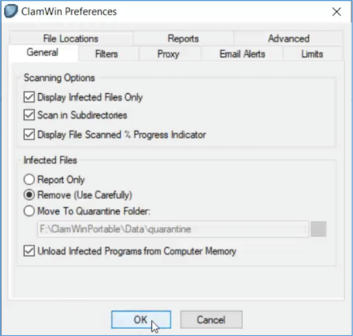
-
Highlight the
C: drive in the next dialog and click
Scan.
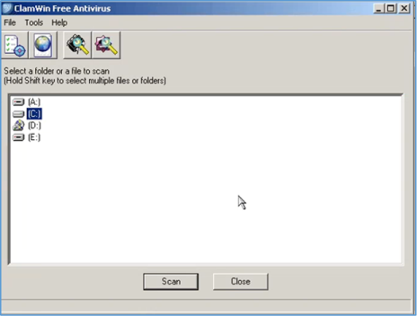
The scan will begin, and the window will display the current status. When the scan is completed, a summary will be displayed.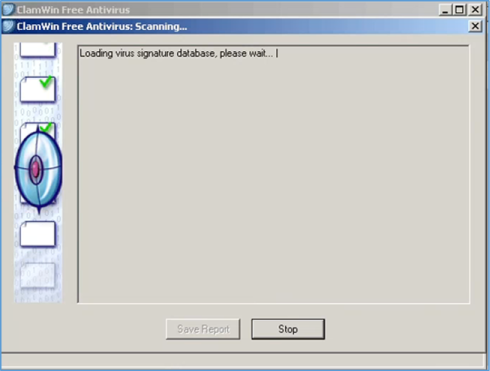
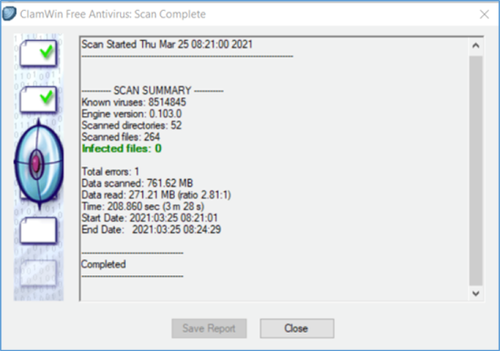
-
Click
Close. You will find the report on your USB drive in the ClamWinPortable\Data\Log directory.
Note: Only the latest scan will be saved here. If you want to run multiple scans you will need to copy or rename the log files before running the next scan.